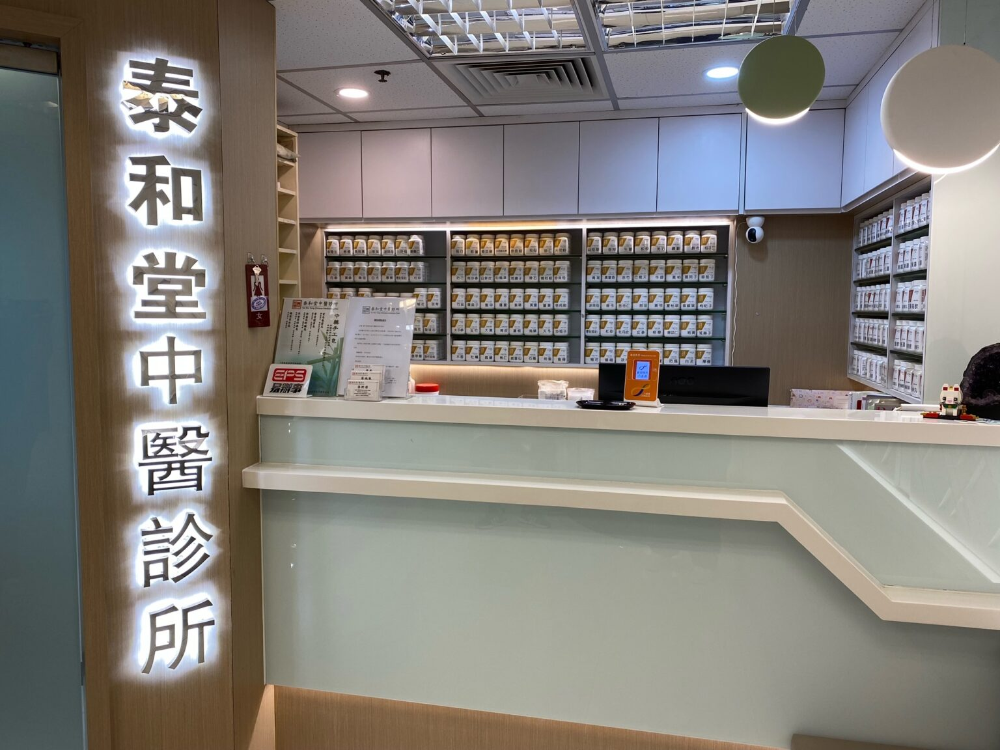
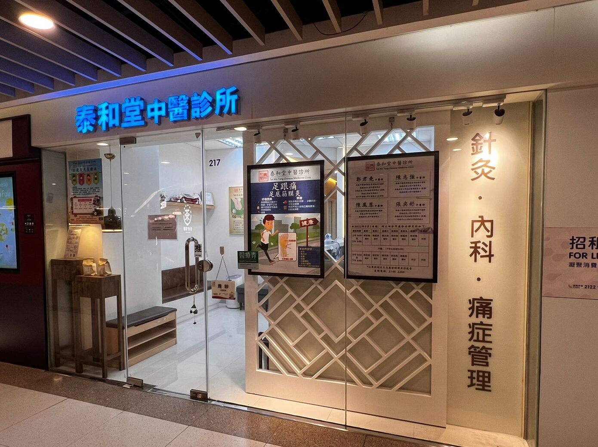
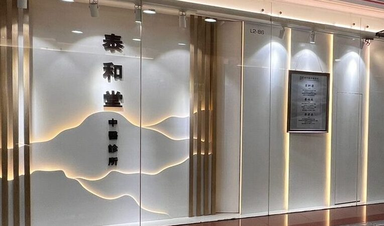

簡介
泰和堂中醫診所由香港中醫藥管理委員會之註冊中醫師開設。
泰和堂的「泰」取自「泰卦」– 乾坤陰陽交通之象，天地相交，陰陽相合則萬物資生 ，萬物資茂則天地安和，代表陰陽通達，身體陰陽調順；「和」則代表五臟六腑安和，有生生不息之意。「泰和」突顯中醫核心精神—陰陽調和。本診所以此為盼，本著濟世扶危，專業關懷為宗旨，歇力為普羅大眾提供最優質可靠之中醫醫療服務。
本診所提供內科、兒科、皮膚科、婦科等全科服務，並應用農本方中藥免煎沖劑，以電子化病歷進行記錄，致力提供現代化中醫服務以方便市民大眾。另外，本診所設有針灸、艾灸、拔罐、梅花針、耳穴及骨傷推拿等服務，亦配備中藥手工皂、中藥足浴包等外用藥，務求以多元化方式為大眾提供治療。
1 / 4

2 / 4

3 / 4

4 / 4